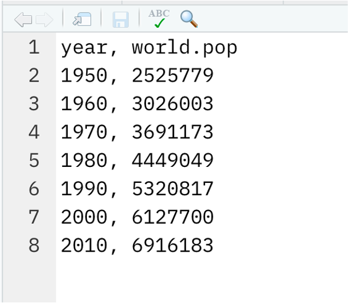
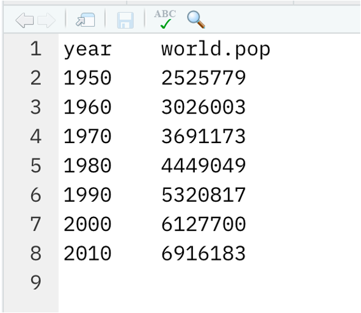
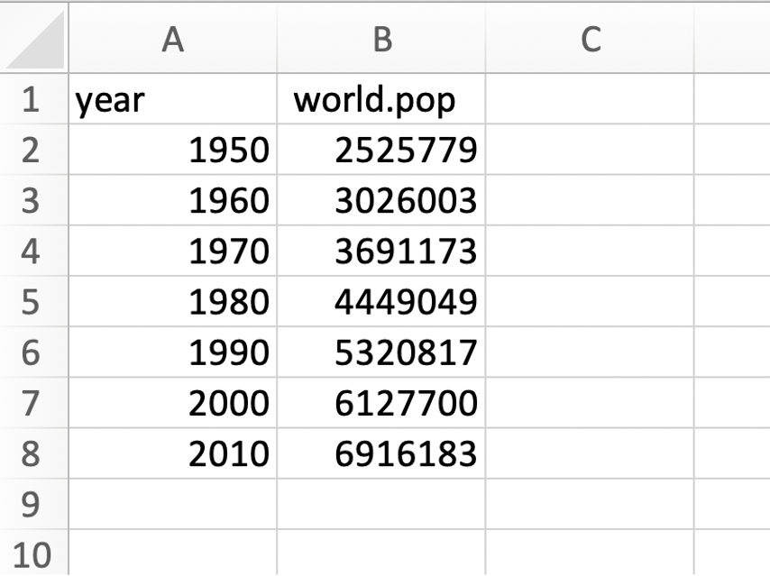
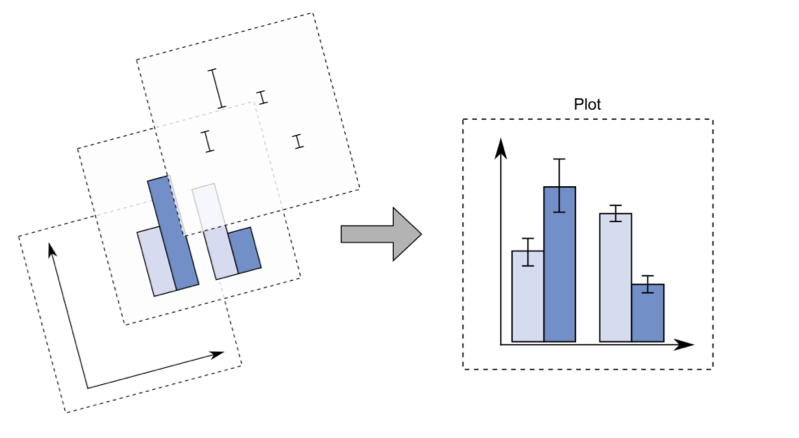
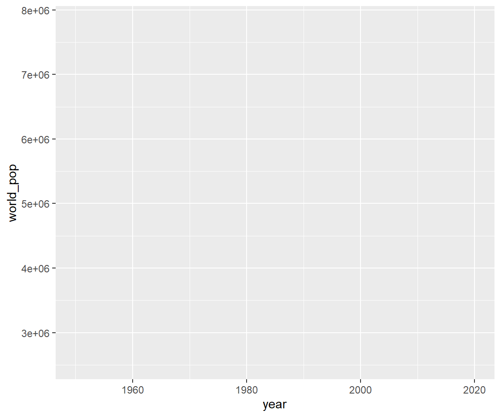
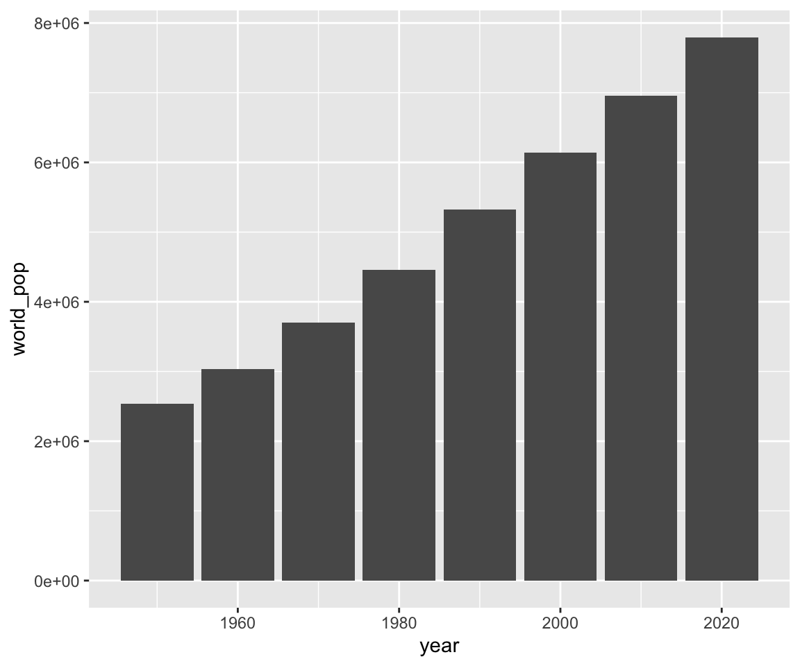
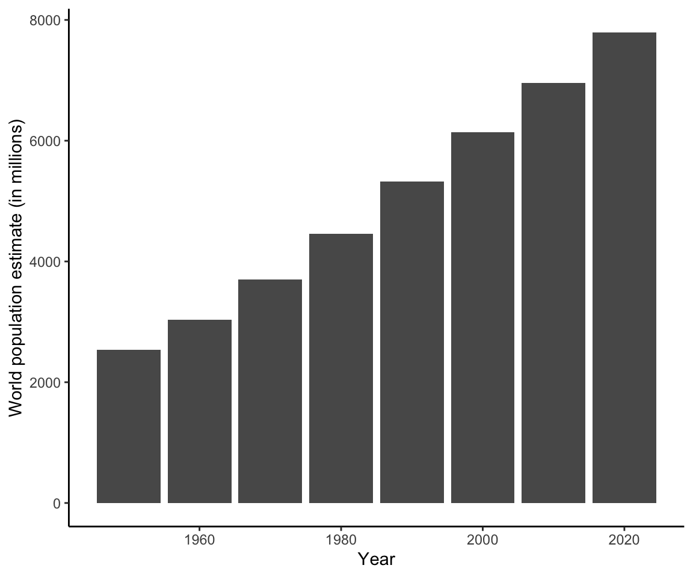
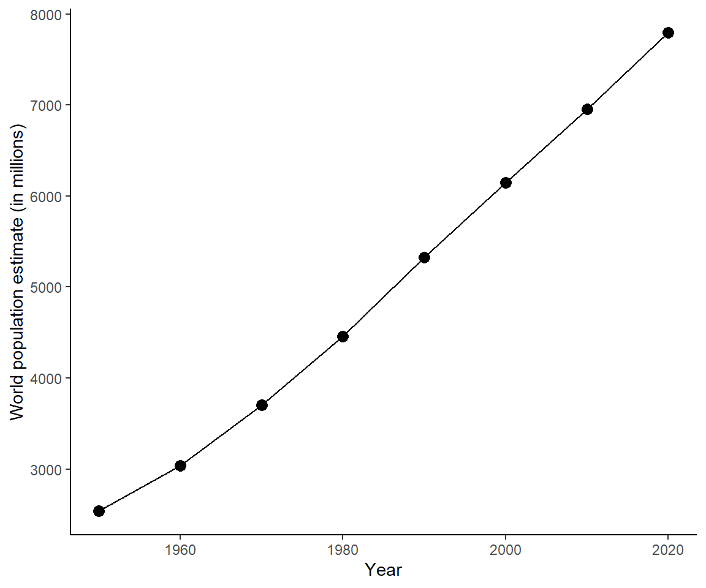

── Attaching core tidyverse packages ──────────────────────── tidyverse 2.0.0 ──
✔ dplyr 1.1.2 ✔ readr 2.1.4
✔ forcats 1.0.0 ✔ stringr 1.5.0
✔ ggplot2 3.4.2 ✔ tibble 3.2.1
✔ lubridate 1.9.2 ✔ tidyr 1.3.0
✔ purrr 1.0.1
── Conflicts ────────────────────────────────────────── tidyverse_conflicts() ──
✖ dplyr::filter() masks stats::filter()
✖ dplyr::lag() masks stats::lag()
ℹ Use the conflicted package (<http://conflicted.r-lib.org/>) to force all conflicts to become errors2: Working with data
Adding functionality
Your R installation comes pre-packed with lots of functionality. Just by opening R you are able to perform computations, create graphics (you’ll see this later on), use functions, and much more.
However, sometimes you may wish to use additional functionality that does not come directly with the installed software. R is a free and open-source programming language with a vast user network. This has led in turn to a myriad of user-contributed additional functionality, each bundled in different packages (also called libraries).
These packages are stored in the Comprehensive R Archive Network (CRAN) and can be installed.
You only need to install a package once, to bring it from the web to your local computer.
Then, to actually use the package in every R session, you simply need to load the package (and not install it every single time).
You install a package by going to the Files & Plots panel, click “Packages” in the tabs, then select Install, type the package names and click Install.
Remember, you only need to do this once.
As we said, package are pre-shipped with your R installation. Examples are the base, stats, and graphics packages. Each of those can be considered as a “folder” providing different functionality. You will see the use of those functions later on in the course.
Actually, when you install R it comes with many more packages. Some are automatically loaded when you open R, making their functionality immediately available to you, while others are left in the background unopened. In the picture below, the loaded packages are shown in orange, and the ones not loaded are in gray.
For each new R session, in order to use the functionality from packages that are not automatically loaded, or that you have installed later, you must load the package with the function library(package_name) at the top of the R script.
Prelude
In today’s lesson you will need the tidyverse package. We will use this package to read data files into R. Try loading it:
library(tidyverse)Did you get an error?
If yes, you don’t have the package installed. Install the package following the instructions above. Then try again running library(tidyverse).
If you don’t get an error, amazing! It should look like this:
Important. It is common practice to put all code loading packages at the top of the R script.
There are some messages returned, but none of those are errors. In fact, in R errors start with the word “Error”. If you don’t read the word “Error” in the message, it’s not an error.
Open RStudio, create a new R script called lesson2.R and save it into your r-bootcamp folder.
In the previous examples we only entered data manually. However, this isn’t very efficient if you are working with lots of data and it increases the chance of typing errors. This lesson will show you how to read into R data stored in files.
Before going ahead, please download the following data files and save them into the subfolder “data” of r-bootcamp
Data files
A data file is any file storing data. The following types of data files are commonly used:
- .csv (Comma Separated Values)
- .tsv or .txt (Tab Separated Values)
- .xlsx (Excel data file)
How does each look?



Directories
Before importing the data into R we need to tell R in which folder we are working. This is because R will look for the data files in that folder only. If the files are stored somewhere else, R will not find them.
This step is called setting the working directory. You can set the working directory, i.e. tell R in which folder you are working, by going to the RStudio menu -> Session -> Set working directory -> Choose directory -> Navigate to r-bootcamp
Alternatively, you can go to the Files and Plots panel, click the Files tab, navigate to the r-bootcamp folder, click More -> Set as working directory.
Within the r-bootcamp folder, you should have a subfolder “data” with the data files saved inside.
Reading data into R
To read a CSV file into R we use the following function:
unpop <- read_csv('data/UNpop.csv')Rows: 8 Columns: 2
── Column specification ────────────────────────────────────────────────────────
Delimiter: ","
dbl (2): year, world_pop
ℹ Use `spec()` to retrieve the full column specification for this data.
ℹ Specify the column types or set `show_col_types = FALSE` to quiet this message.unpop# A tibble: 8 × 2
year world_pop
<dbl> <dbl>
1 1950 2536431
2 1960 3034950
3 1970 3700437
4 1980 4458003
5 1990 5327231
6 2000 6143494
7 2010 6956824
8 2020 7794799To read a file in which the values are separated by tabs, we use the read_tsv() function:
unpop_txt <- read_tsv('data/UNpop.txt')Rows: 8 Columns: 2
── Column specification ────────────────────────────────────────────────────────
Delimiter: "\t"
dbl (2): year, world_pop
ℹ Use `spec()` to retrieve the full column specification for this data.
ℹ Specify the column types or set `show_col_types = FALSE` to quiet this message.unpop_txt# A tibble: 8 × 2
year world_pop
<dbl> <dbl>
1 1950 2536431
2 1960 3034950
3 1970 3700437
4 1980 4458003
5 1990 5327231
6 2000 6143494
7 2010 6956824
8 2020 7794799To read Excel files, you need to load a package called readxl. Edit the top of your R script to have also the library(reaxl) command. The top of your R script should look like this:
Now, read the excel file into R:
unpop_xlsx <- read_excel('data/UNpop.xlsx')
unpop_xlsx# A tibble: 8 × 2
year world_pop
<dbl> <dbl>
1 1950 2536431
2 1960 3034950
3 1970 3700437
4 1980 4458003
5 1990 5327231
6 2000 6143494
7 2010 6956824
8 2020 7794799As you can see, they all produce the same data in R. Since they’re all the same, let’s look at the first one.
unpop# A tibble: 8 × 2
year world_pop
<dbl> <dbl>
1 1950 2536431
2 1960 3034950
3 1970 3700437
4 1980 4458003
5 1990 5327231
6 2000 6143494
7 2010 6956824
8 2020 7794799The data table is stored in an object of class tibble. If you inspect the class it looks quite complicated but it has “tbl” among the values.
class(unpop)[1] "spec_tbl_df" "tbl_df" "tbl" "data.frame" How many rows and columns are there?
The data store the world population estimates for the last 8 decades. Hence, we have 2 variables (year and world_pop), and 8 rows (one for each decade).
To get the names of the recorded variables you could either use names() or colnames():
The summary() function produces quick summaries for the variables in the data table. However, this is just for a quick exploration, it is not appropriate copying and pasting such output for a journal publication, essay, or report. That would require better styling.
summary(unpop) year world_pop
Min. :1950 Min. :2536431
1st Qu.:1968 1st Qu.:3534065
Median :1985 Median :4892617
Mean :1985 Mean :4994021
3rd Qu.:2002 3rd Qu.:6346826
Max. :2020 Max. :7794799 We can create a publication quality summary table by doing for example
stats <- unpop %>%
summarise(Mean = mean(world_pop),
SD = sd(world_pop),
Min = min(world_pop),
Max = max(world_pop))
stats# A tibble: 1 × 4
Mean SD Min Max
<dbl> <dbl> <dbl> <dbl>
1 4994021. 1888599. 2536431 7794799The function %>% is called pipe and it simply means “take what’s on the left, then do …”
For example these are equivalent:
[1] 2.72 4.11 5.65 7.39 9.36 11.58 14.09 16.92 20.09 23.62 [1] 2.72 4.11 5.65 7.39 9.36 11.58 14.09 16.92 20.09 23.62To format the tables for journals or reports, you can use one of the following options.
The kable() function from the knitr package. If you don’t have the package installed, make sure you run install.packages("knitr") before!
Indexing data tables
We can extract particular parts of a tibble (i.e. data table) as follows
unpop[1:3, ]# A tibble: 3 × 2
year world_pop
<dbl> <dbl>
1 1950 2536431
2 1960 3034950
3 1970 3700437unpop[c(2, 5, 6), ]# A tibble: 3 × 2
year world_pop
<dbl> <dbl>
1 1960 3034950
2 1990 5327231
3 2000 6143494unpop[2, ]# A tibble: 1 × 2
year world_pop
<dbl> <dbl>
1 1960 3034950unpop[, 2]# A tibble: 8 × 1
world_pop
<dbl>
1 2536431
2 3034950
3 3700437
4 4458003
5 5327231
6 6143494
7 6956824
8 7794799unpop$world_pop[1] 2536431 3034950 3700437 4458003 5327231 6143494 6956824 7794799unpop$world_pop[1:3][1] 2536431 3034950 3700437unpop[1:3, 2]# A tibble: 3 × 1
world_pop
<dbl>
1 2536431
2 3034950
3 3700437unpop[1:3, 'world_pop']# A tibble: 3 × 1
world_pop
<dbl>
1 2536431
2 3034950
3 3700437Extract the first 3 years from the data.
The following returns a tibble
unpop[1:3, 'year']# A tibble: 3 × 1
year
<dbl>
1 1950
2 1960
3 1970While this way returns a vector
unpop$year[1:3][1] 1950 1960 1970To create a new variable, you simply use the $ symbol with a new name
unpop$world_pop_millions <- unpop$world_pop / 1000The tidyverse way
There is a simpler way to work with data. The tidyverse package, which you can load with
Has the following functions:
slice()to keep only some rowsfilter()to only keep the rows matching some conditionselect()to only keep specific columnsmutate()to create new columns via a computation
Display all data:
unpop# A tibble: 8 × 3
year world_pop world_pop_millions
<dbl> <dbl> <dbl>
1 1950 2536431 2536.
2 1960 3034950 3035.
3 1970 3700437 3700.
4 1980 4458003 4458.
5 1990 5327231 5327.
6 2000 6143494 6143.
7 2010 6956824 6957.
8 2020 7794799 7795.Create a new column with the population in millions
# A tibble: 8 × 3
year world_pop world_pop_millions
<dbl> <dbl> <dbl>
1 1950 2536431 2536.
2 1960 3034950 3035.
3 1970 3700437 3700.
4 1980 4458003 4458.
5 1990 5327231 5327.
6 2000 6143494 6143.
7 2010 6956824 6957.
8 2020 7794799 7795.Check if the column is still in the original data:
unpop# A tibble: 8 × 3
year world_pop world_pop_millions
<dbl> <dbl> <dbl>
1 1950 2536431 2536.
2 1960 3034950 3035.
3 1970 3700437 3700.
4 1980 4458003 4458.
5 1990 5327231 5327.
6 2000 6143494 6143.
7 2010 6956824 6957.
8 2020 7794799 7795.It is not there! Why? Because we didn’t overwrite the unpop variable when we created the new column:
Keep first 3 rows only:
# A tibble: 3 × 3
year world_pop world_pop_millions
<dbl> <dbl> <dbl>
1 1950 2536431 2536.
2 1960 3034950 3035.
3 1970 3700437 3700.Keep only the world_pop column:
# A tibble: 8 × 1
world_pop
<dbl>
1 2536431
2 3034950
3 3700437
4 4458003
5 5327231
6 6143494
7 6956824
8 7794799Keep only the world_pop column and the first 3 rows only:
# A tibble: 3 × 1
world_pop
<dbl>
1 2536431
2 3034950
3 3700437Let’s compute the average population over that time period:
avg_pop <- mean(unpop$world_pop)
avg_pop[1] 4994021Keep only the rows with a world population larger than the mean:
# A tibble: 4 × 3
year world_pop world_pop_millions
<dbl> <dbl> <dbl>
1 1990 5327231 5327.
2 2000 6143494 6143.
3 2010 6956824 6957.
4 2020 7794799 7795.In all the code above, the symbol %>% is called pipe and can be inserted with Control + Shift + M on Windows or Command + Shift + M on macOS.
Its role is telling R to continue the computation. Basically it allows you to write nested expressions
bop(scoop(hop(foo_foo, through = forest), up = field_mice), on = head)using a more human-readable form1:
foo_foo %>%
hop(through = forest) %>%
scoop(up = field_mouse) %>%
bop(on = head)The idea is that if you have some function f(), you can do
df %>%
f(y)Which has the same meaning as:
f(df, y)So whatever you carry forward with the pipe gets passed as the first argument of the next function.
If you want to be specific, you can use a . inside:
Tibbles
A data table is an object which stores data. Up to now, you have only read data tables in R from files stored on your PC.
You can also create it directly yourself by typing the values into a function called tibble(), also part of the tidyverse package.
In lesson 1, we stored the world population and the years in separate numeric vectors:
But the first value in world_pop is linked to the first year, and so on. So it’s better to keep the values linked together and arranged into a data table.
In a tibble we write the column names, an equal sign, and the values
tibble(
column_name = values,
another_column_name = other_values
)tbl <- tibble(
year = seq(1950, 2020, by = 10),
world_pop = c(2536431, 3034950, 3700437, 4458003, 5327231, 6143494, 6956824, 7794799)
)
tbl# A tibble: 8 × 2
year world_pop
<dbl> <dbl>
1 1950 2536431
2 1960 3034950
3 1970 3700437
4 1980 4458003
5 1990 5327231
6 2000 6143494
7 2010 6956824
8 2020 7794799Missing values
We do not have the estimates for the current year yet, and also we do not have the estimates for 1930 and 1940. Let’s add rows corresponding to those years in the data table, but for the world population estimate value we will provide NA = not available.
# A tibble: 3 × 2
year world_pop
<dbl> <lgl>
1 1930 NA
2 1940 NA
3 2021 NA unpop <- bind_rows(unpop, extra)
unpop# A tibble: 11 × 3
year world_pop world_pop_millions
<dbl> <dbl> <dbl>
1 1950 2536431 2536.
2 1960 3034950 3035.
3 1970 3700437 3700.
4 1980 4458003 4458.
5 1990 5327231 5327.
6 2000 6143494 6143.
7 2010 6956824 6957.
8 2020 7794799 7795.
9 1930 NA NA
10 1940 NA NA
11 2021 NA NA Let’s arrange the years in ascending order
unpop <- arrange(unpop, year)
unpop# A tibble: 11 × 3
year world_pop world_pop_millions
<dbl> <dbl> <dbl>
1 1930 NA NA
2 1940 NA NA
3 1950 2536431 2536.
4 1960 3034950 3035.
5 1970 3700437 3700.
6 1980 4458003 4458.
7 1990 5327231 5327.
8 2000 6143494 6143.
9 2010 6956824 6957.
10 2020 7794799 7795.
11 2021 NA NA Let’s try computing the summaries again:
unpop %>%
summarise(Mean = mean(world_pop),
SD = sd(world_pop),
Min = min(world_pop),
Max = max(world_pop)) %>%
gt()| Mean | SD | Min | Max |
|---|---|---|---|
| NA | NA | NA | NA |
It’s not working anymore! Why is that?
R cannot sum a number with something that isn’t available.
2 + NA[1] NAHence, there are 2 possible solutions:
- tell the R functions to ignore the NA values by specifying the argument
na.rm = TRUE - subset the data to only keep the rows without NAs
unpop_clean <- na.omit(unpop)
unpop_clean# A tibble: 8 × 3
year world_pop world_pop_millions
<dbl> <dbl> <dbl>
1 1950 2536431 2536.
2 1960 3034950 3035.
3 1970 3700437 3700.
4 1980 4458003 4458.
5 1990 5327231 5327.
6 2000 6143494 6143.
7 2010 6956824 6957.
8 2020 7794799 7795.unpop_clean %>%
summarise(Mean = mean(world_pop),
SD = sd(world_pop),
Min = min(world_pop),
Max = max(world_pop)) %>%
gt()| Mean | SD | Min | Max |
|---|---|---|---|
| 4994021 | 1888599 | 2536431 | 7794799 |
Graphics
You may also want to display your data visually. We do that using the ggplot package, which is automatically loaded when you load the tidyverse package.
The idea of a ggplot is to build a plot layer by layer. You start by specifying the axes, then add the geometries you want shown (points, lines, columns/bars), and then add labels, and theme options.



# Change labels
ggplot(data = unpop_clean, aes(x = year, y = world_pop / 1000)) +
geom_col() +
labs(x = 'Year', y = 'World population estimate (in millions)')# Change theme
ggplot(data = unpop_clean, aes(x = year, y = world_pop / 1000)) +
geom_col() +
labs(x = 'Year', y = 'World population estimate (in millions)') +
theme_classic()
Alternatively, you could plot the population for each decade as a dot and join the dots with lines:
ggplot(data = unpop_clean, aes(x = year, y = world_pop / 1000)) +
geom_point(size = 3) +
geom_line() +
labs(x = 'Year', y = 'World population estimate (in millions)') +
theme_classic()
Note the key components of a ggplot:
data =is where we provide the name of the data tableaes =where we provide the aesthetics. These are things which we map from the data to the graph. For instance, the x-axis, or if we wanted to colour the columns/bars according to some aspect of the data.Then we add (using
+) some geometry. These are the shapes (for instance, points or lines), which will be put in the correct place according to what we specified in aes().+ geom_...Adds different shapes (e.g., points) to the plot.
You can find great documentation on ggplot2 at https://www.statsandr.com/blog/graphics-in-r-with-ggplot2/.
Recommended activities
Recommended readings
For further information, check to the following: